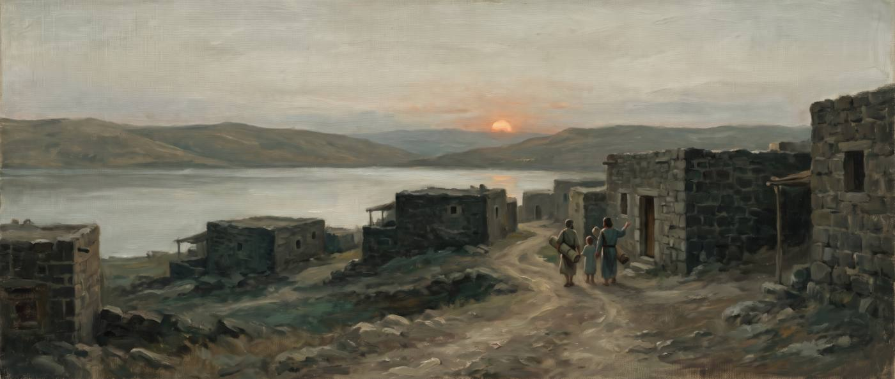
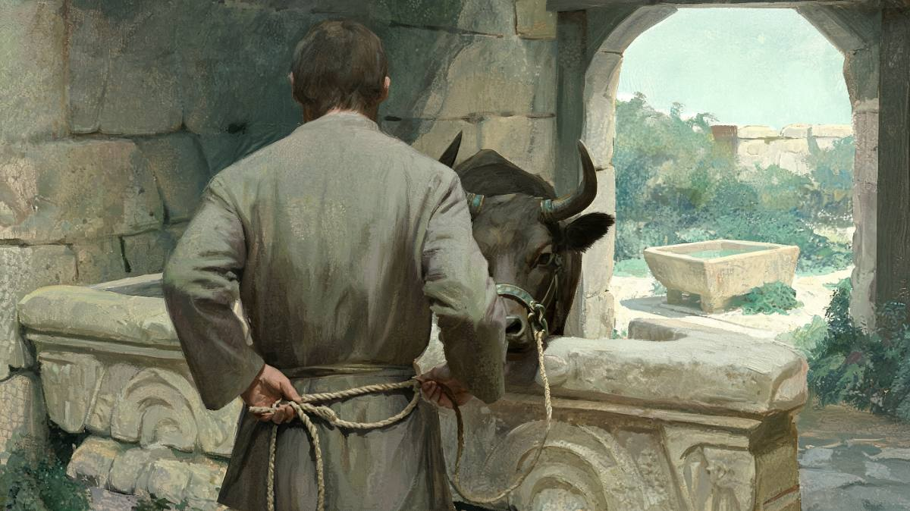
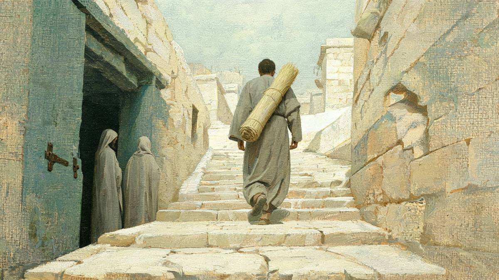

왜 하필 안식일이었을까
예수님은 열여덟 해, 서른여덟 해 된 병을 안식일에 고치셨어요. 하루만 기다리면 아무 문제가 없었을 병이었어요. 그런데도 기다리지 않으셨고, 그 일로 죽이려는 사람들까지 생겼어요. 왜 그러셨을까요?
베드로의 그물 기적도 안식일이었을까요?
아니에요. 그리고 안식일 기적이 “특히 많았던” 것도 아니에요.
누가복음 5:1–11에는 안식일이라는 말이 없어요. 누가복음에 “안식일”(σάββατον)은 스무 번 나오는데, 4:31 다음이 바로 6:1이에요. 5장은 한 번도 건드리지 않아요.
오히려 평일 장면이에요. 베드로는 “밤이 새도록” 고기를 잡았고(5:5), 아침에는 그물을 씻고 있었어요(5:2). 안식일이었다면 밤새 고기를 잡은 것부터 문제가 됐을 거예요. 주전 2세기 문서인 『희년서』는 안식일에 “짐승이나 새나 물고기를 잡는 자”를 죽을죄 목록에 넣어요(50:12). 헷갈리기 쉬운 까닭은 바로 앞 4:31–41이 안식일이기 때문이에요. 가버나움 회당의 귀신 쫓음과 베드로 장모의 치유가 그 안식일 하루에 있었어요.
복음서 전체에서 안식일이라고 밝힌 치유는 일곱 건이에요.
| 본문 | 누구를 | 병을 앓은 기간 | 논쟁 |
|---|---|---|---|
| 마가복음 1:21–28 누가복음 4:31–37 | 가버나움 회당의 귀신 들린 사람 | 밝히지 않음 | 없음 |
| 마가복음 1:29–31 누가복음 4:38–39 | 베드로의 장모 | 열병 | 없음 |
| 마가복음 3:1–6 마태 12장 · 누가 6장 | 손 마른 사람 | 밝히지 않음 | 있음 · 죽일 모의 |
| 누가복음 13:10–17 | 허리가 굽은 여인 | 18년 | 있음 |
| 누가복음 14:1–6 | 수종병 든 사람 | 밝히지 않음 | 있음 · 모두 침묵 |
| 요한복음 5:1–18 | 베데스다 못가의 병자 | 38년 | 있음 · 죽이려 함 |
| 요한복음 9:1–41 | 맹인 | 날 때부터 | 있음 · 바리새인이 둘로 갈림 |
복음서가 기록한 기적 전체에서 보면 일곱 건은 적은 편이에요. 그런데도 많아 보이는 까닭은 따로 있어요. 복음서가 “안식일”이라는 낱말을 쓸 때 그 절반이 치유 논쟁 장면이거든요.
안식일에 병을 고치면 안 됐나요?
반만 맞아요. 금지된 것은 치유가 아니라 치료 행위였어요.
먼저 구약 율법에는 안식일 치료를 막는 조항이 없어요. 출애굽기 20:10은 “아무 일도 하지 말라”고만 해요. 2세기의 이레나이우스도 이 점을 짚어서, 율법은 “안식일에 사람이 고침받는 것을 금하지 않았다”고 썼어요(『이단 반박』 4.8.2).
“무엇이 일인가”를 정한 것은 그 뒤의 해석 전통이에요. 이 전통은 200년경 『미쉬나』로 정리됐어요. 미쉬나는 안식일에 금지된 일을 서른아홉 가지로 꼽고, 치료에 대해서는 이렇게 선을 그어요.
이가 아픈 사람은 식초를 머금어 헹구어서는 안 된다. 그러나 평소처럼 음식을 식초에 찍어 먹을 수는 있고, 그러다가 나으면 나은 것이다.
미쉬나 샤바트 14:4
원리가 분명해요. 고치려고 하는 행위는 막고, 평소 하던 일을 하다 우연히 낫는 것은 문제 삼지 않아요. 미쉬나 샤바트 22:6도 같아요. 부러진 뼈를 맞추지 말고, 삔 곳을 찬물에 흔들지 말라고 해요. 평소처럼 씻다가 “나으면 나은 것”이고요.
그리고 큰 예외가 하나 있었어요.
목이 아픈 사람에게는 안식일에도 입에 약을 넣어 준다. 생명이 걸렸을지 모르기 때문이다. 생명이 걸렸을지 모르는 모든 경우는 안식일을 밀어낸다.
미쉬나 요마 8:6 · 랍비 마티야 벤 하라시
이 원리를 뒤에 “생명 구하기”(פִּקּוּחַ נֶפֶשׁ, 피쿠아흐 네페쉬)라고 불러요. 뿌리는 마카비 시대까지 올라가요. 주전 167년경 안식일에 공격을 받은 유대인 약 천 명이 저항하지 않고 몰살당하자, 맛디아가 “안식일에 싸우러 오는 자와는 싸우자”고 결정했어요(마카비1서 2:32–41). 이 일에서 생명과 안식일 중 무엇이 먼저냐는 물음이 시작됐어요.
미쉬나는 200년경에 편집됐고, 요마 8:6의 발언자는 2세기 랍비예요. 예수님보다 한 세기쯤 늦어요. 그래서 “예수님 당시에 정확히 이 규정이 있었다”고 말할 수는 없어요. 다만 “치료 행위는 막고 생명은 예외”라는 틀은 1세기 논쟁에서 이미 자라고 있었다고 보는 것이 일반적이에요.
그런데 왜 하루를 기다리지 않으셨을까요?
예수님이 고치신 사람은 모두 목숨이 급하지 않은 만성 환자였어요.
위 표를 다시 보면 드러나요. 열여덟 해, 서른여덟 해, 날 때부터, 손이 마른 사람, 수종병 든 사람이에요. 모두 오래된 병이라 “생명이 걸린 경우”라는 예외에 들지 않아요. 하루를 기다리면 누구도 트집 잡을 수 없었어요. 회당장의 항의가 정확히 이 점을 짚어요.
회당장이 예수께서 안식일에 병 고치시는 것을 분 내어 무리에게 이르되 일할 날이 엿새가 있으니 그 동안에 와서 고침을 받을 것이요 안식일에는 하지 말 것이니라 하거늘
누가복음 13:14 · 개역개정
당시 사람들은 실제로 그렇게 했어요. 가버나움의 그 안식일에 병자들이 예수님께 몰려온 때는 “저물어 해 질 때”였어요(마가복음 1:32). 누가도 “해 질 적에”라고 적어요(4:40). 안식일은 해 질 녘에 끝나요. 병자를 메고 옮기는 일은 서른아홉 가지 가운데 마지막인 “옮기기”에 걸리니, 사람들은 해가 지기를 기다린 것으로 보여요. 이 페이지 맨 위 그림이 그 저녁이에요.
그러니까 선을 지킨 쪽은 사람들이었고, 선을 넘은 쪽은 예수님이셨어요. 우연이 아니라 고르신 거예요. 그렇다면 이유가 있어야 하고, 복음서는 그 이유를 예수님의 입으로 직접 말해요.
“해야 한다”와 “풀려나야 한다”
회당장과 예수님이 같은 낱말을 두고 맞서요.
회당장이 말한 “일할 날”은 원문으로 “일해야 하는 날”이에요(δεῖ ἐργάζεσθαι). 출애굽기 20:9를 옮긴 말이죠. 예수님은 두 절 뒤에서 똑같은 “해야 한다”(δεῖ)로 되받으세요.
그러면 열여덟 해 동안 사탄에게 매인 바 된 이 아브라함의 딸을 안식일에 이 매임에서 푸는 것이 합당하지 아니하냐
누가복음 13:16 · 개역개정
“합당하지 아니하냐”의 원문은 οὐκ ἔδει λυθῆναι, 곧 “풀려나야 하지 않느냐”예요. 회당장의 “해야 한다”를 예수님이 여기서 뒤집으세요.
| 본문 | 첫머리 원문 · 사역 | 묻는 것 |
|---|---|---|
| 6:9 손 마른 사람 | εἰ ἔξεστιν τῷ σαββάτῳ 안식일에 옳으냐 | 해도 되는가 |
| 14:3 수종병 | ἔξεστιν τῷ σαββάτῳ θεραπεῦσαι 안식일에 고치는 것이 옳으냐 | 해도 되는가 |
| 13:16 굽은 여인 | οὐκ ἔδει λυθῆναι 풀려나야 하지 않느냐 | 해야 하는가 |
다른 두 논쟁은 “옳으냐”(ἔξεστιν), 곧 허용을 물어요. 13장만 “해야 한다”를 써요. 누가복음에서 이 낱말은 하나님의 뜻이 반드시 이루어지는 곳에 쓰여요. “내가 내 아버지 집에 있어야 될 줄”(2:49), “인자가 많은 고난을 받고 … 살아나야 하리라”(9:22)가 같은 낱말이에요. 그러니 예수님의 말씀은 “안식일에도 고쳐도 된다”가 아니에요. “안식일이니까 풀려나야 한다”예요.

왜 안식일이어야 할까요? 예수님은 소 이야기로 답하세요. “너희가 각각 안식일에 자기의 소나 나귀를 외양간에서 풀어 내어 이끌고 가서 물을 먹이지 아니하느냐”(13:15). 그리고 여인은 사탄에게 매였고 이제 풀려나야 한다고 하세요. “풀다”(λύω)가 12절(“네 병에서 놓였다”), 15절, 16절에 세 번 이어져요.
이 논증은 상대가 이미 하고 있는 일에서 출발해요. 미쉬나도 매듭 풀기를 금지된 일로 꼽지만(샤바트 7:2), 짐승이 나가지 않게 줄을 매는 것은 허용해요(15:2). 짐승에게 물을 먹이는 일은 누구도 막지 않았어요. 하루 목마른 소는 풀어 주면서, 열여덟 해 묶인 사람은 하루 더 기다리라는 거냐는 물음이에요.
신명기의 안식일 계명은 그 이유를 창조가 아니라 출애굽에 둬요. “너는 기억하라 네가 애굽 땅에서 종이 되었더니 … 그러므로 안식일을 지키라”(신명기 5:15). 누가는 예수님의 첫 설교도 안식일 회당에 두는데, 그 본문이 “포로 된 자에게 자유를”이에요(4:18). “자유”(ἄφεσις)가 한 절에 두 번 나와요. 13장의 여인은 그 선언이 한 사람에게 이루어진 경우예요.
요한복음에서는 무엇이 걸렸을까요?
공관복음과 달리 요한복음은 어긴 항목을 짚어서 적어요.
공관복음의 치유는 대부분 말씀과 손으로 이루어져요. 말하는 것은 서른아홉 가지 일에 들지 않아요. 그래서 공관복음에서는 “정확히 무엇을 어겼나”가 흐릿해요. 요한복음은 달라요.
| 본문 | 예수님이 하신 일 | 걸리는 항목 | 근거 |
|---|---|---|---|
| 요한복음 5:8–10 | “네 자리를 들고 걸어가라” | 옮기기 서른아홉 가지 중 39번째 | 예레미야 17:21 “안식일에 짐을 지고 예루살렘 문으로 들어오지 말라” |
| 요한복음 9:6, 14 | 땅에 침을 뱉어 진흙을 이겨 눈에 바르심 | 반죽하기 서른아홉 가지 중 10번째 | 9:14가 “진흙을 이겨 … 하신 날이 안식일”이라고 그 행위를 콕 집어 적음 |
9장은 더 흥미로워요. 3세기 랍비 슈무엘은 “맛없는 침을 안식일에 눈에 바르는 것은 금지”라고 했어요(예루살렘 탈무드 샤바트 14:4). 요한복음 9:6과 겹치는 규정이에요. 다만 이것도 예수님보다 두 세기 늦은 기록이에요.

요한복음 5장은 자리를 들게 하신 명령을 문제 삼아요. 병이 나은 것보다 자리를 들고 걷는 사람이 먼저 눈에 띄었어요. 유대인들은 그 사람에게 “안식일인데 네가 자리를 들고 가는 것이 옳지 아니하니라”고 해요(5:10). 틴데일 불레틴에 실린 브라이언의 논문(2003)은 이 명령을 “의도적인 도발”로 봐요. 걸을 수 있다는 것만 보여 주려면 자리를 두고 가라고 해도 됐으니까요.
재미있는 일치가 하나 더 있어요. 누가가 “풀다”(λύω)를 사람에게 쓴다면, 요한은 같은 동사를 안식일과 율법에 써요.
| 본문 | 원문 · 사역 | 무엇을 푸나 |
|---|---|---|
| 누가복음 13:16 | λυθῆναι ἀπὸ τοῦ δεσμοῦ 매임에서 풀려나다 | 사람을 매임에서 |
| 요한복음 5:18 | ἔλυε τὸ σάββατον 안식일을 풀었다(범했다) | 안식일을 |
| 요한복음 7:23 | ἵνα μὴ λυθῇ ὁ νόμος 율법이 풀리지 않게 하려고 | 율법을 |
비판하는 쪽은 예수님이 안식일을 “풀었다”고 봤고, 누가의 예수님은 안식일에 사람을 “풀어야 한다”고 하셨어요. 두 복음서가 서로를 보고 쓴 것은 아니니 의도된 짝이라고 할 수는 없어요. 그래도 같은 동사가 논쟁의 양쪽을 다 가리켜요.
왜 죽이려고까지 했을까요?
규정 다툼만으로는 살의가 설명되지 않아요. 층이 셋이에요.
첫째 층은 규정이에요. 안식일은 그냥 쉬는 날이 아니라 언약의 표징이었어요. 출애굽기 31:13–14는 안식일을 “나와 너희 사이의 표징”이라 하고, 더럽히는 자는 죽이라고 해요. 마카비 시대에는 이 날을 지키다 천 명이 죽었어요. 안식일은 유대인이 유대인으로 남는 경계선이었어요.
다만 안식일 해석은 한 가지가 아니었어요. 쿰란 공동체의 『다마스쿠스 문서』는 예수님이 기대신 상식보다 훨씬 엄격해요.
| 본문 | 내용 | 성격 |
|---|---|---|
| 다마스쿠스 문서 11:13–14 | 안식일에 짐승의 새끼 낳기를 돕지 말고, 구덩이나 웅덩이에 빠져도 끌어올리지 말라 | 쿰란 종파 |
| 다마스쿠스 문서 11:16–17 | 물에 빠진 사람도 사다리나 줄이나 도구로 끌어올리지 말라 | 쿰란 종파 |
| 누가복음 14:5 마태복음 12:11 | “너희 중에 누가 … 우물에 빠졌으면 안식일에라도 곧 끌어내지 않겠느냐” | 청중이 끌어낸다는 것을 전제함 |
예수님의 물음은 청중이 “당연히 끌어낸다”고 답할 것을 전제해요. 곧 예수님과 논쟁한 사람들은 쿰란보다 너그러운 쪽이었어요. 요한복음 9:16에서는 바리새인들이 “안식일을 지키지 아니하니 하나님께로부터 온 자가 아니라”는 쪽과 “어떻게 죄인으로서 이러한 표적을 행하겠느냐”는 쪽으로 둘로 갈려요. “율법에 매인 바리새인 대 은혜의 예수님”이라는 구도는 이 장면들을 너무 단순하게 만들어요.
2세기 랍비들에게서도 예수님의 말씀과 거의 같은 문장이 나와요.
또 이르시되 안식일이 사람을 위하여 있는 것이요 사람이 안식일을 위하여 있는 것이 아니니
마가복음 2:27 · 개역개정
안식일은 너희에게 맡겨진 것이지, 너희가 안식일에 맡겨진 것이 아니다.
『메킬타 데라비 이스마엘』 출애굽기 31:13 · 랍비 시므온 벤 메나시야
그러니 둘째 층은 권위예요. 원리 자체보다 “누가 그 원리를 정하느냐”가 문제였어요. 누가복음 6:7을 보면 서기관과 바리새인들은 치유가 일어나기 전부터 “고발할 증거를 찾으려 하여” 엿보고 있었어요. 회당 한가운데서, 사람들 앞에서 해석 권위를 드러내 놓고 흔드는 일이었어요.
그리고 셋째 층이 살의로 이어져요. 복음서가 “죽이려 했다”고 적은 두 곳을 나란히 놓으면 보여요.
그들에게 이르시되 안식일에 선을 행하는 것과 악을 행하는 것, 생명을 구하는 것과 죽이는 것 중에 어느 것이 옳으냐 하시니 그들이 잠잠하거늘
마가복음 3:4 · 개역개정
마가복음 3:4의 물음은 생명 구하기 원리를 그대로 끌어와 넓혀요. 목숨이 급하지 않은 손 마른 사람을 고치는 일도 “생명을 구하는 것”이고, 고칠 수 있는데 미루는 것은 중립이 아니라 “악을 행하는 것”이라는 거예요. 그리고 바로 그 안식일에 바리새인들이 헤롯당과 함께 예수님을 “어떻게 하여 죽일까” 의논해요(3:6). 생명을 구하느냐 죽이느냐를 물은 날, 죽일 의논이 시작돼요.
유대인들이 이로 말미암아 더욱 예수를 죽이고자 하니 이는 안식일을 범할 뿐만 아니라 하나님을 자기의 친아버지라 하여 자기를 하나님과 동등으로 삼으심이러라
요한복음 5:18 · 개역개정
요한은 이유를 둘로 나눠 적어요. 안식일을 범한 것, 그리고 하나님을 친아버지라 한 것이에요. “더욱”(μᾶλλον)이라는 말이 둘 사이의 무게를 알려 줘요. 박해(5:16)가 살의(5:18)로 바뀐 것은 두 번째 이유 때문이에요. 바로 앞 5:17에서 예수님은 “내 아버지께서 이제까지 일하시니 나도 일한다”고 하셨어요. 안식일에 쉬지 않고 일하시는 하나님과 같은 일을 하신다는 주장이에요.
흔히 요한복음 5:17의 배경으로 드는 이야기가 있어요. 로마에 간 네 랍비에게 누가 “하나님은 왜 안식일을 지키지 않느냐”고 묻자, 랍비들이 “온 세상이 그분의 뜰이니 그 안에서 움직이는 것은 일이 아니다”라고 답했다는 이야기예요(『출애굽기 랍바』 30:9). 그런데 이 문헌은 훨씬 뒤에 편집됐고, 일화의 배경도 1세기 말이에요. 브라이언(2003)은 2세기 이전에 이런 논의가 있었다는 증거가 없다고 봐요. 그래서 이 배경은 가설로만 붙여 둘게요.
학자들은 어떻게 보나요?
예수님이 정말 안식일을 “어겼는가”부터 갈려요.
| 입장 | 대표 | 핵심 주장 | 판정 |
|---|---|---|---|
| 충돌은 없었다 | 샌더스 1985 · 1990 | 공관복음 치유 이야기에는 규정 위반이 없다. 논쟁 장면은 후대 교회의 논쟁이 투영된 것이다 | 가설 |
| 치유 금지의 증거가 없다 | 마이어하스 2003 | 고대 유대교에서 안식일 치유를 불법으로 본 증거는 없다 | 가설 |
| 어겼고, 생명 원리를 넓혔다 | 되링 1999 | 당대 해석으로는 위반이다. 마가복음 3:4는 생명 구하기를 만성 질환까지 넓힌 것이고, 2:27은 창조 질서(사람이 안식일보다 먼저)로 돌아간 것이다 | 가설 |
| 어겼고, 근거는 하나님 나라의 권위다 | 바크 2010 | 예수님은 새 규정을 만들거나 원리를 넓히는 방식으로 변호하지 않았다. 근거는 하나님 나라의 일을 한다는 직접적 권위였다 | 가설 |
최근 논의의 기준점은 되링의 『샤바트』(1999)예요. 이 책이 나온 뒤로는 “예수님이 당시 해석으로는 안식일을 어기셨다”는 쪽이 우세해요. 다만 “왜”에 대한 답은 둘로 갈려요. 되링은 예수님이 유대 전통 안에서 원리를 넓혔다고 보고, 바크는 규정 논리가 아니라 하나님 나라의 권위를 앞세웠다고 봐요.
마이어하스의 주장은 미쉬나 샤바트 14:4와 22:6을 보면 조심해서 읽어야 해요. 병이 “낫는 것”은 금지되지 않았지만 병을 “고치는 행위”는 막았으니까요. 샌더스의 주장은 요한복음 5장과 9장을 설명하기 어려워요. 그 두 장은 옮기기와 반죽하기라는 구체적 항목을 짚고 있거든요.
정리하면
| 항목 | 근거 | 판정 |
|---|---|---|
| 누가복음 5:1–11은 안식일 사건이다 | 5장에 σάββατον 없음, 밤샘 고기잡이(5:5), 희년서 50:12 | 반증 |
| 예수님의 기적은 특히 안식일에 많았다 | 안식일 치유 7건. 다만 복음서의 σάββατον 56회 중 27회가 치유 논쟁 장면 | 반증 |
| 구약 율법이 안식일 치료를 금한다 | 출 20:9–10 · 신 5:13–15에 치료 언급 없음. 이레나이우스 『이단 반박』 4.8.2 | 반증 |
| 후대 해석은 치료 행위를 막고 생명만 예외로 두었다 | 미쉬나 샤바트 14:4 · 22:6 · 요마 8:6 (2세기 이후 기록) | 확인 |
| 예수님이 고치신 이들은 모두 만성 환자였다 | 18년 · 38년 · 날 때부터 · 손 마름 · 수종병 | 확인 |
| 당시 사람들은 안식일이 끝나기를 기다렸다 | 막 1:32 “해 질 때”, 눅 4:40 “해 질 적에” | 확인 |
| 누가는 13:16을 허용이 아니라 필연으로 적는다 | 6:9 · 14:3은 ἔξεστιν, 13:16만 δεῖ | 확인 |
| 요한복음은 어긴 항목을 짚는다 | 5:10 옮기기, 9:14 진흙 이기기 | 확인 |
| 살의는 규정 위반보다 권위·기독론 주장에서 나왔다 | 요 5:18 “더욱 … 친아버지라 하여”, 막 3:6 | 확인 요한복음 기준 |
| “하나님도 안식일에 일하신다”는 1세기 유대 전통이 요 5:17의 배경이다 | 근거 문헌이 모두 후대. 브라이언 2003 반론 | 미결 |
| 바리새인은 안식일 치유에 한목소리로 반대했다 | 요 9:16 둘로 갈림, 눅 14:5 청중의 상식이 쿰란보다 너그러움 | 반증 |
어려운 말 풀이
- 미쉬나 Mishnah
- 유대교의 구전 율법 해석을 200년경에 정리한 책이에요. 안식일 규정은 「샤바트」 편에 모여 있어요.
- 서른아홉 가지 일
- 미쉬나 샤바트 7:2가 안식일에 금지된 일로 꼽은 목록이에요. 씨 뿌리기부터 “한 영역에서 다른 영역으로 옮기기”까지 있어요.
- 피쿠아흐 네페쉬 פִּקּוּחַ נֶפֶשׁ
- “생명 구하기”. 생명이 걸린 경우에는 안식일 규정을 제쳐 둔다는 원리예요.
- 할라카 הֲלָכָה
- 유대교에서 율법을 실제 생활에 어떻게 지킬지 정한 규범이에요.
- 메킬타 Mekhilta
- 출애굽기를 풀이한 랍비 문헌이에요. 2세기 랍비들의 말을 많이 담고 있어요.
- 다마스쿠스 문서 CD
- 쿰란 공동체의 규칙서예요. 카이로의 유대 회당 창고에서 먼저 발견되고 뒤에 쿰란 동굴에서도 조각이 나왔어요.
- 희년서 禧年書
- 주전 2세기에 창세기와 출애굽기 앞부분을 다시 쓴 유대 문헌이에요. 안식일 규정이 매우 엄격해요.
- 공관복음 共觀福音
- 마태·마가·누가 세 복음서예요. 같은 사건을 나란히 놓고 볼 수 있어서 이렇게 불러요.
근거 자료
복음서 통계는 SBL 헬라어 신약(SBLGNT)의 형태소 자료를 직접 집계한 값입니다. 치유 논쟁 장면 안의 σάββατον 용례는 요한복음 7:22–23처럼 앞 장의 치유를 두고 이어지는 논쟁을 포함해 셌습니다. 셈법에 따라 한두 번 차이가 날 수 있습니다.
미쉬나·탈무드·메킬타·미드라시는 Sefaria의 원문(히브리어·아람어)과 영역을 대조해 확인했습니다. 이 문헌들은 모두 예수님보다 늦게 기록되었으므로, 본문에서는 “1세기에 이미 그 규정이 있었다”고 단정하지 않았습니다. 다마스쿠스 문서는 공개된 영역으로 확인했으며 원문 사본을 직접 대조하지는 못했습니다.
되링, 마이어하스, 샌더스의 견해는 바크(2010)의 논문을 통해 간접 확인한 것이며, 원저를 직접 읽지는 못했습니다. 요한복음 5:17의 유대 배경에 대한 반론은 브라이언(2003)의 논문 원문에서 확인했습니다.
- SBLGNT / MorphGNT 형태소 자료 — σάββατον(복음서 56회) · λύω · δεῖ · ἔξεστιν · ἐργάζομαι 집계, 막 1:32 · 3:4–6 · 눅 4:40 · 6:7 · 13:12–16 · 14:3 · 요 5:10–18 · 7:23 · 9:6–16 원문 확인
- 미쉬나 샤바트 7:2 · 14:4 · 15:2 · 19:2 · 22:6, 요마 8:6 — Sefaria 원문·영역
- 『메킬타 데라비 이스마엘』 출애굽기 31:13 · 바빌론 탈무드 요마 85b · 예루살렘 탈무드 샤바트 14:4 · 『출애굽기 랍바』 30:9 — Sefaria
- 다마스쿠스 문서(CD) 10:14–11:18 — 펜실베이니아 대학 CCAT 공개 영역
- 『희년서』 50:8–13 · 마카비1서 2:32–41 — 공개 영역본
- 이레나이우스 『이단 반박』 4.8.2–3 (New Advent 영역본)
- J. Nolland, 『WBC 성경주석 35 누가복음(중)』 (솔로몬) 512–519쪽 — λύω 세 번의 통일성, 회당장 말의 출애굽기 20:9 인용 관찰
- S.-O. Back, “Jesus and the Sabbath”, Handbook for the Study of the Historical Jesus 3 (Brill 2010) 2597–2633 — 연구사 정리와 결론
- S. M. Bryan, “Power in the Pool: The Healing of the Man at Bethesda and Jesus’ Violation of the Sabbath (Jn. 5:1–18)”, Tyndale Bulletin 54/2 (2003) — 5:17 배경 비판, 자리 명령의 성격
- L. Doering, Schabbat: Sabbathalacha und -praxis im antiken Judentum und Urchristentum (Mohr Siebeck 1999) — Back 경유 2차 인용
- A. J. Mayer-Haas, “Geschenk aus Gottes Schatzkammer” (Aschendorff 2003) — Back 경유 2차 인용
- E. P. Sanders, Jesus and Judaism (1985) · Jewish Law from Jesus to the Mishnah (1990) — Back 경유 2차 인용
- 대한성서공회 『성경전서 개역개정판』 (장절 표기와 짧은 인용)